Android
- Scan the code or tap the button.
- Open the file. Allow installs from your browser if asked.
- If it refuses, uninstall an older Car Cam first.
A free viewer for the camera on the NQD 1:64 Desktop Drift car, on Android, iPhone, Windows and Linux. Open it and the picture fills your screen, with photos and video recording built in. No account, and no driving controls.
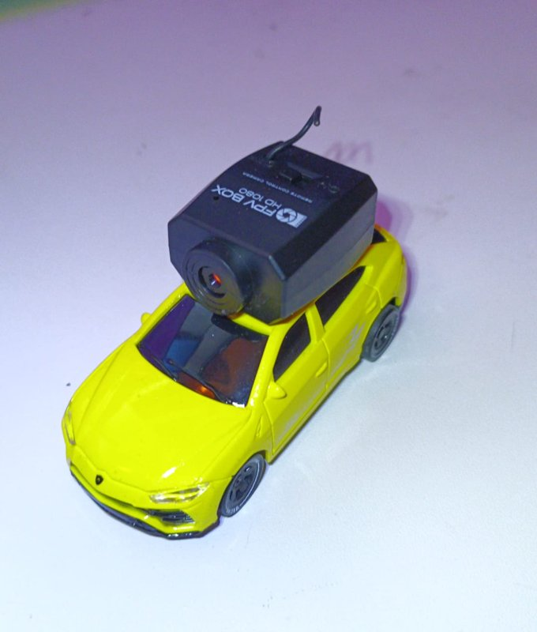
Live video, photos and recording on every platform. On a phone, scan the code with your camera or tap the link.
CarCamSetup.exe.tar xzf car-cam-linux-x64.tar.gzcar-cam-linux-x64 folder, run ./install.shThe computer apps are a preview. The Linux app has been used with the real car. The Windows app has so far only been built and tested in GitHub Actions, not on a real PC. Both are the camera app only and work with any Wi-Fi adapter, including the one built into your computer.
Android and iPhone release · Windows and Linux release · All releases
Computer with one Wi-Fi adapter (most laptops): Car Cam asks first, then switches it from your home Wi-Fi to the car. The internet is off until you disconnect. With a second adapter, pick that one and your internet stays on. F11 or a double-click gives full screen, and VLC can show the stream at http://localhost:8808/car.mjpg.
Stuck? The connection guide covers the usual fixes.
Captured from the real app running in our automated tests. The picture comes from a simulated car, so it's a labelled test image and not real footage.
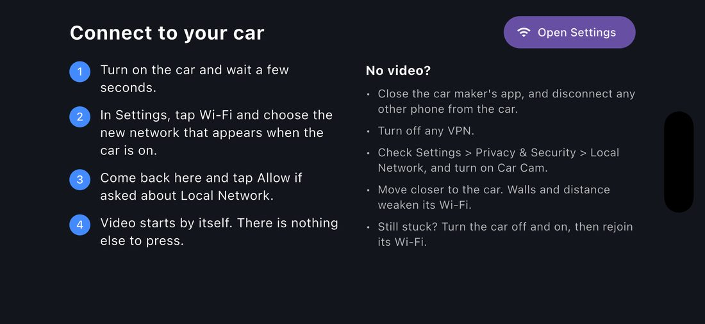
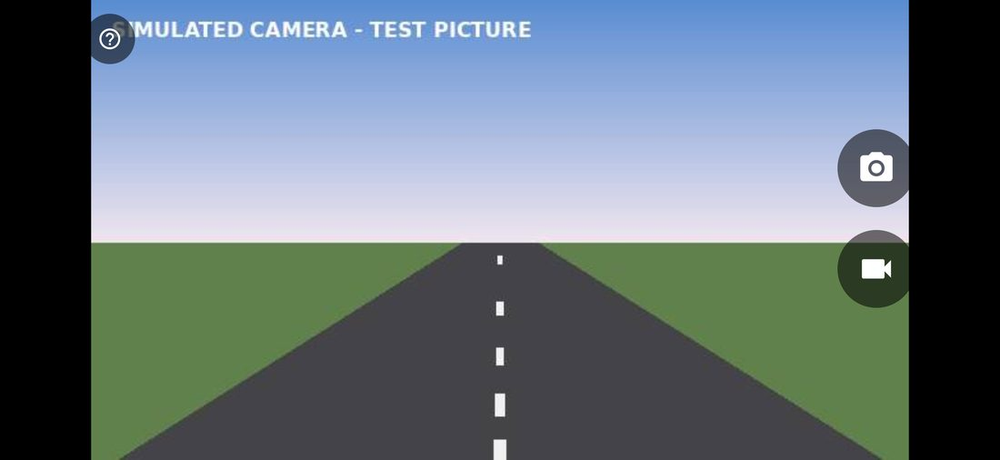
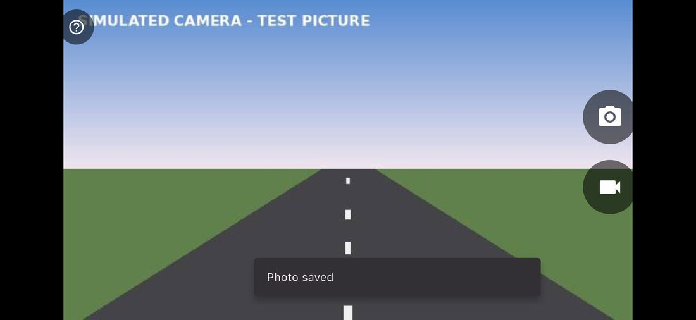
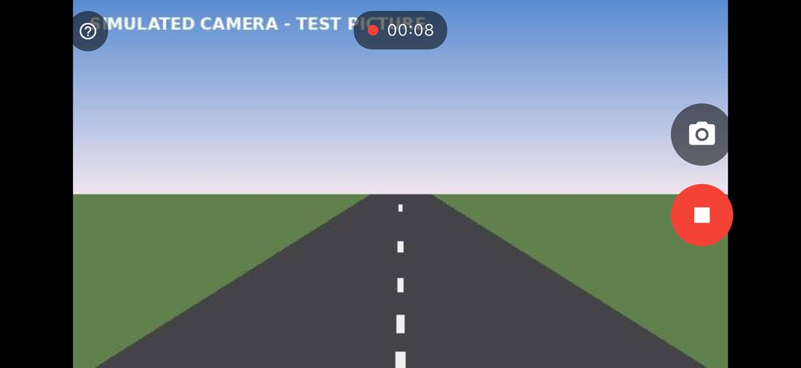
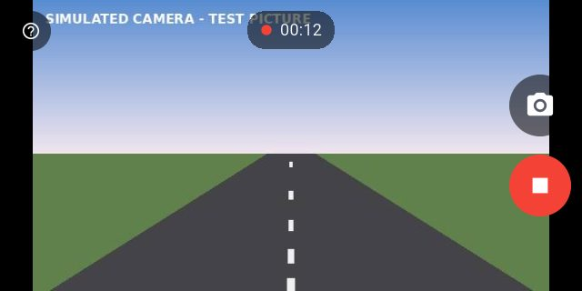
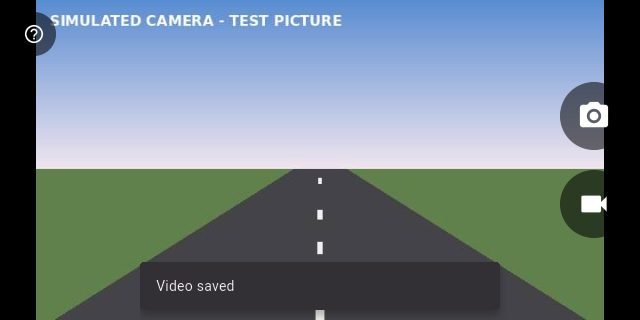
Mockups, rendered from the desktop app's real screens. The car list is pretend and the picture is a drawn road labelled "Simulated picture". Real screenshots will replace them.
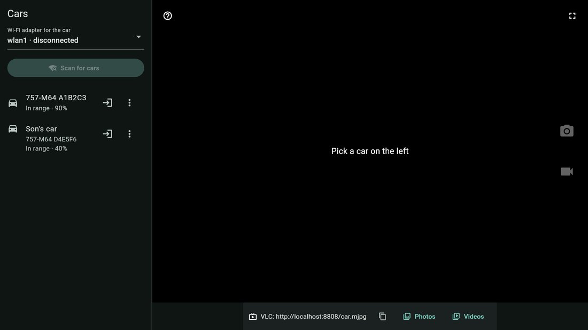
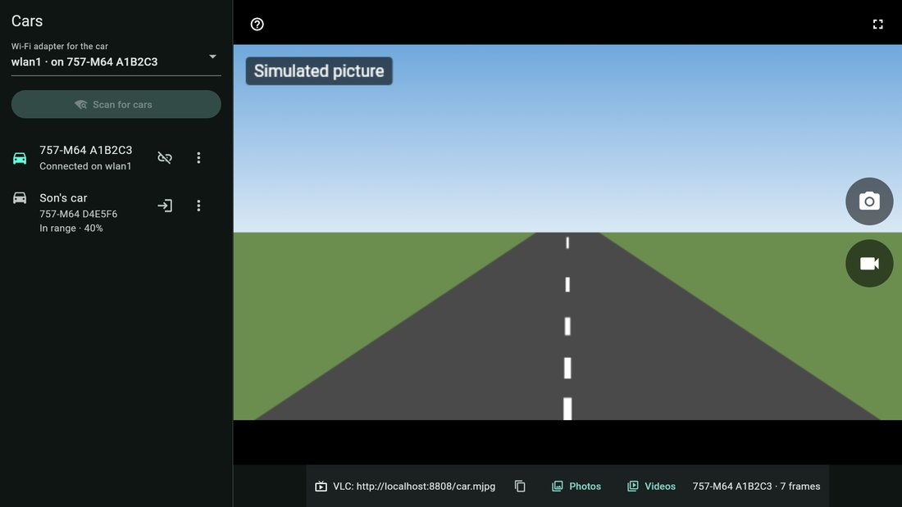
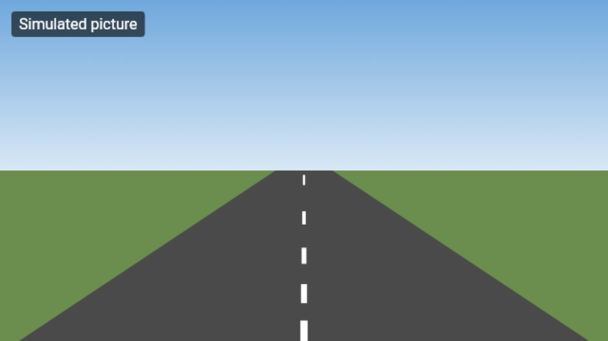
Car Cam is made for this car: the NQD 1:64 Desktop Drift, with the FPV BOX HD 1080 camera on its roof. If your box looks like this, you're in the right place.
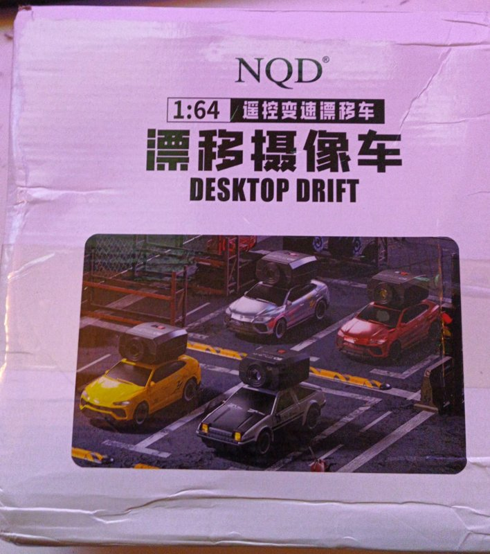
These aren't this exact car. We couldn't find a video of it yet, so these show similar tiny camera cars from other makers, and Car Cam may not work with them. We chose them from their titles and thumbnails, not from watching them.
More to browse on TikTok: mini FPV RC cars and tiny RC cars with cameras.